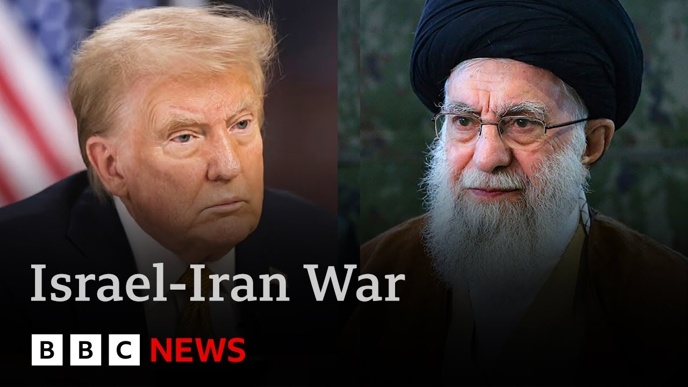

【特朗普威胁杀死伊朗最高领袖哈梅内伊并勒令"无条件投降" | BBC新闻】
Summary: U.S. President Trump has demanded Iran's unconditional surrender and referred to Iran's Supreme Leader as an "easy target" on social media, though he stated that the U.S. will not take immediate action. American fighter jets are en route to the Middle East, fueling speculation that the U.S. may directly intervene in the Israel-Iran conflict. Trump has convened his national security team to discuss countermeasures, while Iran continues to launch missiles at Israel. A mass exodus has begun in Tehran, and the situation is growing increasingly unstable.
摘要： 美国总统特朗普要求伊朗无条件投降，并在社交媒体上称伊朗最高领袖是“容易目标”，但表示美国暂不会采取行动。美军战机正飞往中东，外界猜测美国可能直接介入以伊战争。特朗普已召集国家安全团队商讨对策，而伊朗持续向以色列发射导弹。德黑兰出现大规模逃亡潮，局势动荡加剧。

⏱️ Estimated Reading Time: 20 min
📚 六级生词 📚 雅思生词 📚 托福生词 📚 专八生词 📚 SAT生词 📚 考研生词 📚 GRE生词 📚 高考生词
President Trump has called on Iran for unconditional surrender.
特朗普要求伊朗无条件投降。
In a flurry of posts on his social media this afternoon, Donald Trump called Iran's supreme leader an easy target, but said that the US was not going to kill him, at least not yet.
特朗普今日下午在社交媒体连发帖文，称伊朗最高领袖是“容易目标”，但表示美国“至少目前”不会杀死他。
US fighter jets are understood to be on their way to the Middle East as speculation grows that the US could become directly involved in the war between Israel and Iran.
美军战斗机正飞往中东，外界猜测美国可能直接介入以色列与伊朗的战争。
Tonight, Donald Trump has met his national security team to decide America's next move.
特朗普当晚与国家安全团队会面，商讨美国下一步行动。
Well, this is Tel Aviv tonight.
这是今晚的特拉维夫。
Iran has fired more missiles into Israel, but there are no reports so far of any impacts.
伊朗向以色列发射了更多导弹，但尚未有击中报告。
As millions flee Thran today, we will ask if the US is about to get involved in the war and whether the regime in Iran could be about to fall.
随着数百万人今日逃离德黑兰，我们将探讨美国是否即将参战，以及伊朗政权会否崩溃。
But first, here's Tom Baitman with the latest from Washington.
首先请听汤姆·贝特曼从华盛顿发回的最新报道。
Donald Trump's nighttime dash back to Washington unleashed more uncertainty on a region at war and a frenzy of questions asked at 40,000 ft.
特朗普连夜赶回华盛顿，给战火中的地区带来更多不确定性，引发舆论哗然。
First, what about French President Macarron's remark about an Israel Iran ceasefire plan.
首先，法国总统马克龙提出的以伊停火计划有何进展？
Look at it better than ceasefire.
这比停火协议更好。
We're not looking for a ceasefire.
我们不寻求停火。
I didn't say I was looking for a ceasefire.
我从未说过寻求停火。
That was Emmanuel.
那是马克龙的主张。
Nice guy, but he doesn't get it right too often.
他是个好人，但经常判断失误。
But uh we're not looking we're looking for better.
但我们追求的是更优方案。
The president then turned to an ultimatum for Iran's Supreme Leader Ayatah Ali Hamayi saying he was an easy target.
随后总统向伊朗最高领袖哈梅内伊发出最后通牒，称其为“容易目标”。
We're not going to take him out kill at least not for now he posted but we don't want missiles shot at civilians or American soldiers.
他在帖文中称“至少目前不会除掉他”，但强调“不能容忍导弹袭击平民或美军”。
Our patience is wearing thin.
我们的耐心正在耗尽。
In another post Mr. Trump said he expected unconditional surrender.
特朗普在另一篇帖文中要求伊朗“无条件投降”。
The US is already helping Israel shoot down incoming missiles as Iran retaliates to Israel's attacks, but so far Washington has said its role is limited to that.
美国已协助以色列拦截来袭导弹，但华盛顿表示目前仅限防御性行动。
Mr. Trump has veered between threats to Tehran and highlighting that the US isn't involved.
特朗普在对德黑兰发出威胁的同时，又强调美国未直接参战。
But today's sudden shift has led to mounting speculation over what's coming next.
但今日局势突变引发外界对下一步行动的猜测。
Over the past 3 days, at least 30 US military planes have been moved from bases in America to Europe.
过去三天至少有30架美军飞机从本土调往欧洲。
They are all KC135 tanker aircraft used to refuel fighter jets and bombers.
这些均为KC135空中加油机，可为战机和轰炸机补给燃料。
These pictures taken in Suffukk today appear to show an aerial refueling tanker accompanied by four fighter jets.
今日在萨福克拍摄的画面显示一架加油机与四架战机编队飞行。
One military expert told the BBC the flights were highly unusual and suggestive of contingency plans to support intensive combat operations in the Middle East.
军事专家向BBC表示该调动极不寻常，暗示可能为中东高强度作战做准备。
US officials are keeping their options open.
美国官员称保留所有选项。
We believe that Iran, as president has said from the beginning, should not have a nuclear weapon.
我们认同总统一贯立场：伊朗不得拥有核武器。
That position hasn't changed.
这一立场从未改变。
They can give it up peacefully.
伊朗可和平放弃核计划。
That position hasn't changed.
该立场同样不变。
And as a result, right now we've got assets in the region and we're going to defend them.
因此我们在该地区部署军力以自卫。
Israel wants these to join in its strikes.
以色列希望美军参与空袭。
American B2 stealth bombers, planes it doesn't have.
以军不具备的B2隐形轰炸机。
These could be used to strike Iran's uranium enrichment site at Foraux.
这些轰炸机可打击伊朗福尔道核设施。
Hidden deep underground, it has long been a key target for the Israelis.
该深埋地下的设施长期是以色列重点打击目标。
But only the US is thought to have the bomb needed, the massive ordinance penetrator to destroy it.
但仅美军拥有可摧毁该设施的巨型钻地弹。
A factor that has added to the pressure Israel's leader has put on the president.
这加剧了以方对特朗普的施压。
But Mr. Trump has also been pushing his desire for a deal with Iran.
但特朗普仍希望与伊朗达成协议。
He still said he hasn't ruled out sending his envoy Steve Wickoff to meet the Iranians.
他称仍可能派特使威克夫与伊朗会谈。
How much of this maneuvering is meant to force Thran's hand as opposed to a planned US action is so far known only to Mr. Trump and his closest advisers.
这些动作是施压手段还是作战准备，目前仅特朗普及其核心幕僚知晓。
But as the world waits, America's military might is on the move.
当世界观望之际，美军已开始行动。
Tom Baitman, BBC News, Washington.
BBC新闻汤姆·贝特曼华盛顿报道。
Let's speak to our North America editor, Sarah Smith, at the White House.
现在连线白宫现场的BBC北美主编莎拉·史密斯。
So, could the United States be about to get directly involved in this war?
美国是否即将直接参战？
Well, after a meeting with his top advisers in the situation room that lasted almost an hour and a half this afternoon and broke up recently, US officials are saying that Donald Trump is considering joining Israel and those attacks on Iranian nuclear sites.
特朗普今日下午与高层顾问在战情室进行近一个半小时的会议，美方官员称其正考虑协同以色列打击伊朗核设施。
But it's pretty clear his top advisers are not agreed upon this.
但显然其顾问团队存在分歧。
And there are, of course, lots of reasons for America not to get involved in this.
美国有充分理由避免卷入冲突。
They could easily get dragged into a wider conflict in the Middle East, which is absolutely the last thing Donald Trump wants to get involved in.
这可能使美国陷入更广泛的中东战事，而特朗普极力避免此类情况。
Remember, he campaigned for election saying that he would put America first and not get involved in any foreign wars.
他竞选时承诺“美国优先”，不介入海外战争。
That was a very popular message.
这一主张曾广受欢迎。
And some of his most vocal supporters in Congress are also urging him not to do this.
国会中部分强力支持者也劝诫其保持克制。
But there's one thing Donald Trump has always been absolutely consistent about and absolutely unequivocal on, and that is him saying Iran cannot have nuclear weapons.
但特朗普在“伊朗不得拥核”立场上始终如一。
And he is said to believe that they are now very close to achieving that.
据悉他认为伊朗已接近突破核门槛。
though he could be talked in to taking some kind of action possibly.
尽管他可能被说服采取某些行动。
He had wanted to do a deal with Iran to stop them from developing nuclear weapons and there were negotiations and talks about that because remember Donald Trump sees himself as a dealmaker supreme and he likes to look at himself as a peacemaker as well.
他原本希望通过谈判阻止伊朗发展核武器——自诩“交易大师”的特朗普也喜欢以调停者自居。
But he set a 60-day deadline on those talks and that deadline came and went last week without any kind of agreement.
但他设定的60天谈判期限上周已过，未达成任何协议。
So now he is deeply concerned that Iran are not serious about doing a deal that they have just been stringing him along.
因此他怀疑伊朗缺乏诚意，只是在拖延时间。
So although he might return to negotiations if they offered it, he will feel his hand is much strengthened if there is then a credible threat of military action coming from the United States as well as from Israel.
即便伊朗重启谈判，特朗普认为美以军事施压将增强其谈判筹码。
Sarah Smith, thank you.
谢谢莎拉·史密斯。
Well, Israel launched its first strikes on Iran 5 days ago on Friday in what it described as a preemptive offensive to neutralize Iran's nuclear program.
以色列五日前发动首轮打击，称此为遏制伊朗核计划的先发制人行动。
Targets included nuclear facilities at Isfahan, Natans, and Iraq.
目标包括伊斯法罕、纳坦兹等地核设施。
Oil depots and gas refineries across the country have also been targeted, and air defense systems, military bases, and missile launch sites have been struck.
伊朗全国油库、炼油厂、防空系统、军事基地及导弹发射场均遭打击。
Well, the BBC is not allowed to broadcast from inside Iran, but our colleagues in BBC Persian are keeping across the situation there.
BBC虽无法在伊朗境内报道，但波斯语团队持续关注当地局势。
Sievash Adlan has this report.
西瓦什·阿德兰带来以下报道。
Evacuating a city of 10 million is no easy task.
疏散千万人口的城市绝非易事。
Even before President Trump's evacuation warning, millions were fleeing the Iranian capital.
早在特朗普发布撤离警告前，数百万人已逃离德黑兰。
Now, the roads out of Tehran are choked with traffic.
如今出城道路严重拥堵。
Scenes reminiscent of bank holidays.
场景堪比节假日出行高峰。
But this is a desperate goodbye.
但这是绝望的告别。
On the road, this driver comes across these men.
有司机在路上遇见这群人。
Confused at first, he realized they are addicts who have fled a rehab center damaged by the attacks.
起初困惑的他发现，这些是从遭袭戒毒所逃出的瘾君子。
Why?
为什么？
Back in Tehran, the subway, normally bustling with commuters, rarely looks like this.
平日拥挤的德黑兰地铁如今空荡无人。
One resident who wishes to remain anonymous told us why he is staying.
一位匿名居民解释留守原因。
Even though I hate the Islamic Republic, I'm staying in my home.
“尽管厌恶现政权，我仍要守住家园。
I'm staying in my city.
守住我的城市。
I'll try to stick to my routines.
坚持日常生活。
I'll try to find a cafe that's open and go there.
寻找营业的咖啡馆。
If I see a couple people on the street, I'll smile at them, try to lift their spirits.
向街上的行人微笑，传递希望。
I'll call my friends more often, support them, make them feel better.
多联系朋友，互相支持。
I think right now we have no one but each other.
此刻我们只有彼此。
Not Benjamin Netanyahu and not Israel.
内塔尼亚胡和以色列不在乎我们。
They certainly don't care about us and neither does the Islamic Republic.
伊斯兰政权同样如此。”
For those who chose to stay, using essential services can be challenging.
留守者面临基础服务瘫痪。
Israeli strikes damaged water installations in affluent northern Thran while ATMs ran out of cash.
以军空袭破坏北部富人区供水系统，ATM机无钞可取。
And these are the studios of Iranian state TV.
这是伊朗国家电视台演播室。
This is not just bombardments and missile attacks.
战争不仅是轰炸与导弹。
Iran is fighting the enemy on its own soil.
伊朗正进行本土防御战。
Israel has been infiltrating the country at all levels.
以色列已渗透至各领域。
Car bombs have been detonating and the Iranian intelligence says it has discovered a number of enemy drone factories inside the country and civilians are paying the price.
汽车炸弹频发，情报部门称发现境内无人机工厂，平民付出代价。
This is Thrron's red crescent desperately hoping to find survivors under the rubble.
红新月会队员在废墟中搜寻幸存者。
Among the lost are nurses, skaters, artists, lives cut short.
遇难者包括护士、滑冰运动员、艺术家。
Buildings are being attacked that are residential.
居民楼遭袭。
Our colleague pressed Israel's UN ambassador on civilian casualties.
本台记者质问以色列驻联合国大使平民伤亡问题。
We will do everything we can to minimize civilian casualties, but as you said, you know, it's a war and and we have seen what happened in in our cities.
“我们尽力减少平民伤亡，但战争就是战争——我国城市亦遭袭击。”
So, we will continue to target the military sites in Iran.
“因此将继续打击伊朗军事目标。”
Few in Washington and Tel Aviv are talking publicly about what happens if the regime collapses.
美以当局极少公开讨论伊朗政权崩溃后的局面。
Iranians have been documenting how their lives are changing.
伊朗人记录着生活的剧变。
President Trump said he wants to see their country prosper.
特朗普曾称希望伊朗繁荣。
Fewer will be willing to believe him today than they were just 5 days ago.
但如今相信此话的人比五日前更少。
Is with me now.
现在与我连线的是...
Extraordinary scenes there from Iran, from Thran just emptying out.
德黑兰正在清空的景象令人震撼。
Could the regime be about to fall?
政权会垮台吗？
That can be a very distinct possibility.
这种可能性确实存在。
I think at this point it really depends on the regime itself.
目前取决于政权自身的应对。
Judging from what President Trump is saying, judging on the targeting of Israel, targeting many military uh centers rather than political institutions like the parliament or the government.
从特朗普表态及以军打击目标（多为军事而非议会等政治机构）来看...
Uh perhaps the US and Israel are not so much after regime change but after as President Trump said total capitulation, total surrender, total humiliation of the Islamic regime.
美以或许不寻求政权更迭，而是如特朗普所说要“伊斯兰政权彻底屈服投降”。
What they wish to have is a weakened Islamic regime without its nuclear program unless it refuses to surrender.
除非伊朗拒绝投降，否则美以希望其放弃核计划并遭削弱。
Unless the Supreme Leader refuses to surrender, judging again by what President Trump is saying, that's when the US may choose to strike the Supreme Leader and eliminate him.
若最高领袖拒降——据特朗普言论——美国可能对其发动斩首行动。
Uh after that, obviously, the collapse of the regime will be a given.
届时政权崩溃将成定局。
Sasham, thank you.
谢谢萨沙姆。
Well, more British military jets have been sent to Cyprus to bolster UK interests in the region.
英国增派军机至塞浦路斯以维护区域利益。
That's been confirmed today by the Defense Secretary John Healey.
国防大臣约翰·希利今日证实此事。
And at the G7 summit in Canada, world leaders have been left guessing what President Trump may do next.
G7峰会期间，各国领导人猜测特朗普下一步行动。
Our political editor Chris Mason has been at the summit and has been speaking to Sakir Stama about the conflict, his concerns, and what should happen next.
政治主编克里斯·梅森在峰会现场采访了萨基尔·斯塔马。
If the people of Iran rose up against the regime there, would you welcome that?
若伊朗民众起义反抗政权，您会支持吗？
Well, look, I'm not going to get into what the people of Iran should do.
“我不便评论伊朗民众该怎么做。
I've been really clear.
我的立场很明确。
Um I'm very concerned about the nuclear program that Iran um is developing.
我极度关注伊朗核计划进展。
That's a unanimous position in the G.
这是G7共同立场。
Maybe the only way around that is a different regime.
或许只有政权更迭能解决此问题。
Israel is um obviously threatened and I've been very clear about Israel's right to self-defense.
以色列面临威胁，我坚定支持其自卫权。
This is a conflict which uh could very well escalate which would have implications for the region.
这场冲突可能升级并影响整个地区。
Implications almost undoubtedly prime minister obviously for the how does it resolve this there is growing talk in the region about uh about people rising up against the regime.
影响几乎毫无疑问首相当务之急显然是关于如何解决该问题该地区越来越多讨论民众反抗政权。
People want to know what your instincts are about the long-term solution here to to bring a peaceful solution.
民众想知道您对实现长期和平解决方案的直觉判断。
Well I'm no supporter of the regime in Iran um so if the people there rose up against it you'd welcome that.
我并非伊朗政权支持者若当地民众起义反抗你会乐见其成。
It's not for me as the UK prime minister to start um you know encouraging um people uh in relation to what they might do at home.
作为英国首相我不应主动鼓动民众在国内采取行动。
My absolute focus uh is on the need to deescalate this.
我的绝对重点是必须缓和局势。
How worried are you about the economic impact of the conflict back home on on people's bills?
您多担忧冲突对国内民众账单的经济影响？
Well I'm always concerned about the impact of econom of international issues back on um people back at home.
我一直关切国际问题对国内民众的经济影响。
Yet another shock.
这又是一次冲击。
Well you saw with Ukraine the direct impact it had on energy bills and on the cost of living.
乌克兰战争直接冲击了能源账单和生活成本。
Equally uh with this conflict with Israel and Iran you can see the effect it's having on the economy particularly the crisis.
同样以伊冲突也对经济尤其危机造成可见影响。
You fear that sort of knock on for people.
您担心这种连锁反应波及民众。
Well of course I do.
当然担心。
I don't want to have uh that impact on the lives of people uh in the United Kingdom.
我不希望这影响英国民众生活。
It's among the reasons that I spend a good chunk of my time working at the international level to try to bring about a resolution to deescalate the situation.
这正是我花大量时间在国际层面推动缓和局势解决方案的原因之一。
um because at a time of conflict globally there is always going to be an impact um domestically and my job is to um insulate and safeguard and mitigate that risk uh to everybody watching this um everybody across the United Kingdom.
因为全球冲突时期总会波及国内我的职责就是为全体英国观众隔离保障并降低这种风险。
So Kama talking to our political editor Chris Mason.
以上是与政治编辑克里斯·梅森的对话。
Well let's speak now to our Middle East correspondent Lucy Williamson who is in Tel Aviv.
现在连线驻特拉维夫的中东记者露西·威廉姆森。
And what is the situation there tonight?
当地今晚情况如何？
Are the missile attacks from Iran continuing?
伊朗导弹袭击仍在继续吗？
Well the missile attacks have continued all through last night and all through today.
导弹袭击持续了整晚和整个白天。
The last one just a couple of hours ago but Israel's army is making the point that these barages appear to be getting smaller.
最近一次在两小时前但以军指出袭击规模似乎在减小。
And they say that's proof that their strategy of targeting Iran's launchers is working.
他们称这证明打击伊朗发射装置的战略奏效了。
Meanwhile tonight there's been speculation on Israeli television about whether the United States will get involved in the military offensive.
同时以色列电视台猜测美国会否参与军事进攻。
And Israel's national security chief has come out tonight saying the war in Iran won't finish until the underground site at Foraux is attacked.
以国家安全首长今晚宣称除非袭击福尔多地下设施否则伊朗战争不会结束。
That's the site that Israel um is thought to have want American help for.
该设施被认为是以色列希望获得美国协助的目标。
Now Benjamin Netanyahu has been very careful to say this is a US decision but he's clearly very keen to have US support amid questions about where this war is going next and how it will end.
内塔尼亚胡谨慎表示这是美国的决定但显然他迫切希望获得美方支持因外界质疑战争下一步走向及如何收场。